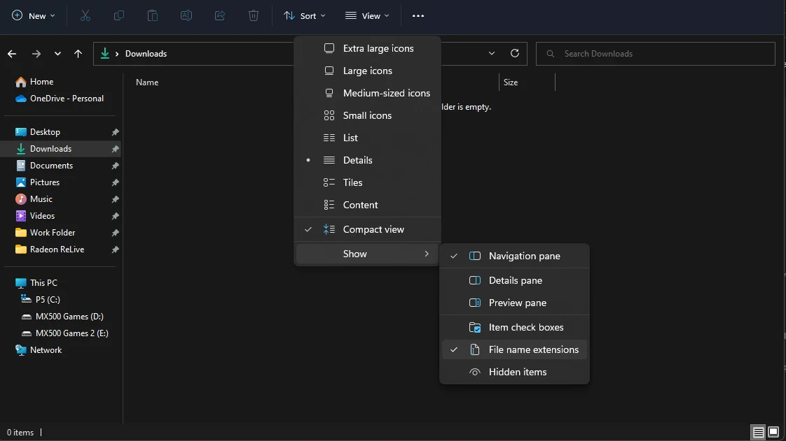

Installing the game
This section tells you how to properly install the game, and avoid issues caused by previous mod setups.
Need help?
If you run into any issues at any point in the guide, feel free to ask for help on our Discord Server in the #support-and-bugs-frost channel.
Enabling File Extensions
Before we start, it is important to enable file extensions in Windows.
By default, File Explorer will not show file extensions (such as .exe, .dll, or .esp). These extensions are very important when going through the guide, so it is highly recommended to enable visible file extensions:
- Open File Explorer
- Select the View tab at the top
- Enable File name extensions in the Show section

Making a Clean Install of Fallout 4
This section explains how to make a Clean Install of Fallout 4 to ensure its properly installed and no left-over files from previous mods are present.
Choosing a Location
A clean installation is not only required to get rid of any potential leftover mod files, but also to make sure the game is installed in a safe location. Here is what you need to know when choosing where to install your game:
-
Avoid any default Windows folders: This includes but is not limited to
C:\Program Files,C:\Program Files x86, yourDesktopand yourDocumentsfolders. This is because users lack write access to Program Files, while Desktop and Documents are often managed by OneDrive. This can cause many issues with the game and any modding tools.An example of a safe location is
C:\Games -
Install on an SSD if possible: Having the game on an SSD will drastically improve loading times and decrease stuttering.
Uninstalling the game
If you never installed the game before, go directly to the Installing the game part.
If you already uninstalled the game, make sure to follow step 4, 5 and 6 to ensure there are no leftovers.
- Open Steam and go to your Library
- Find Fallout 4 in the list
- Right-click on it and select Manage -> Uninstall
- Navigate to
Steam\steamapps\common\and, if present, delete the Fallout 4 folder - Navigate to
Documents\My Gamesand delete the Fallout4 folder - Navigate to
AppData\Localand delete the Fallout4 folder
- Open GOG Galaxy
- Select Fallout 4 in the Installed list, click on the Customization button (the one next to "Play")
- Select Manage Installation -> Uninstall.
- Navigate to
Fallout 4folder that previously contained the game, if present, and delete it - Navigate to
Documents\My Gamesand delete the Fallout4 folder - Navigate to
AppData\Localand delete the Fallout4 folder
Installing the game
Set the game's language to English during or after installing it. Non-English versions can cause issues with certain mods, and all mods featured here are in English.
It is strongly recommended installing the games outside any default Windows folders (such as Program Files (x86)), as the strict Windows file protections of these folders can break certain mods/tools.
Making a new Steam library
- Completely exit out of Steam using Task Manager or System Tray.
- Download the steam_library_setup_tool-3.2.exe file from here.
- Once downloaded, run the file and add a new entry by clicking Add Row.
- Type the chosen path under Path, e.g.
C:\Games\Steam - Click Accept then Yes if prompted to create a new folder.
- The tool will ask to exit, select OK.

Installing the game in Steam
- Open Steam and go to your Library
- Find Fallout 4 in the list and select Install
- Under Install to:, select the library folder created with the tool, which is the second
C:\entry if you are installing on the main drive. If you already had another steam library (for example on an external drive), you can chose that one instead. - Select Next then wait for the install to finish
If you still do not see your new library, restart your PC.
Disabling Automatic Steam Updates
This will prevent Steam from automatically installing Fallout 4 updates, which will break modding support considerably until they gain wide modding support (and the guide's).
- In your Steam Library, right-click on Fallout 4, and click on Properties
- Click on the drop-down at the top of the right pane underneath Automatic Updates
- Set it to Wait until I launcht the game.
Since MO2 bypasses Steam's "play" button, Fallout 4 will never automatically update because you will launch the game through MO2.
Installing the game in GOG
- Select Fallout 4 in your GOG Library
- Click the Install button
- Select a save installation folder at Install to
- Select English as the language
- Click Install
No other steps are required for installing the game.
Key Terminology
Now that the game is installed, there are two folders from it that will be referred to in the guide often:
-
Root folder (where the game is installed):
Steam\steamapps\common\Fallout 4
-
Data folder (where all of the game's assets are located):
Steam\steamapps\common\Fallout 4\Data
Generating Fresh .INI Files
- Run Fallout4Launcher.exe from the game's Root folder
- Click OK to both pop-ups that say Detecting Video Hardware
- If there aren't any pop-ups, navigate to
Documents\My Games\Fallout4and delete all the files ending in .INI then retry
- If there aren't any pop-ups, navigate to
- Click OK then Exit
Downgrading the game
We need to revert the game code to version 1.10.163 for wider modding support.
Installation Instructions
- Download Main Files - Simple Fallout 4 Downgrader using the manual download button
- From the downloaded archive, extract everything to the game's Root folder
- Double-click the fo4downgrader.exe to launch it
- Wait for the
Patching successfulmessage in the console window that just opened - Close the console
Note: You can ignore the "Requirements" of the Fallout 4 Downgrader for now. All the requirement will be installed later in the guide. The requirements do not need to be present for the downgrader to work.
The GOG version of Fallout 4 is already downgraded, you don't need to do anything.
Removing Creation Content (CC)
- This step removes CC content that has not been patched for FROST
-
These CC files have been added by the Next-Gen update, and while they work on the downgraded version of Fallout 4, they are not yet patched for FROST and should be removed
Description
You can simply delete/uninstall the unpatched CC files.
Uninstallation instructions
- Open the Data folder (
...\steamapps\common\Fallout 4\Data) in the Windows Explorer - Delete the following files from it:
ccBGSFO4044-HellfirePowerArmor.eslccBGSFO4115-X02.eslccBGSFO4116-HeavyFlamer.eslccBGSFO4110-WS_Enclave.eslccBGSFO4096-AS_Enclave.eslccFSVFO4007-Halloween.eslccBGSFO4046-TesCan.eslccSBJFO4003-Grenade.eslccOTMFO4001-Remnants.esl
This is only for experienced mod users!
And you obviously need to do this after following the next section, after you installed MO2!
Instead of deleting the CC files, you can create a new empty mod in your MO2 FROST profile, and move the CC .esl files into that new mod folder. Make sure to disable this new mod for your FROST profile, so that the CC .esl mods do not get loaded.
ccBGSFO4044-HellfirePowerArmor.eslccBGSFO4115-X02.eslccBGSFO4116-HeavyFlamer.eslccBGSFO4110-WS_Enclave.eslccBGSFO4096-AS_Enclave.eslccFSVFO4007-Halloween.eslccBGSFO4046-TesCan.eslccSBJFO4003-Grenade.eslccOTMFO4001-Remnants.esl
GOG users can skip this step. The GOG version of Fallout 4 does not have CC mods included.
- Open the Data folder (
Note: You can now move on to the next section.